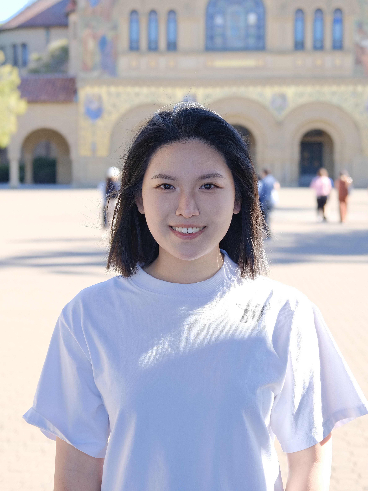

Stanford Operations Research (MS&E)
Jiayi (Joyee) Wang
I am a fourth‑year PhD candidate at Stanford University, advised by Prof. Mohsen Bayati. My research focuses on reinforcement learning, optimization algorithms, and LLM applications. I am especially excited about advancing AI models and translating them into real‑world impact. I believe that’s where their true value lies, and we have so much more to explore.
Before Stanford, I earned my B.S. in Operations Research: Financial Engineering from Columbia University, graduating summa cum laude and receiving the Sebastian B. Littauer Award. I have also been fortunate to work with Prof. Aaron Sidford and Prof. Amin Saberi at Stanford, and with Prof. Daniel Bienstock and Prof. Garud Iyengar at Columbia.
In my free time, I enjoy traveling, golf, tennis, and board games.


